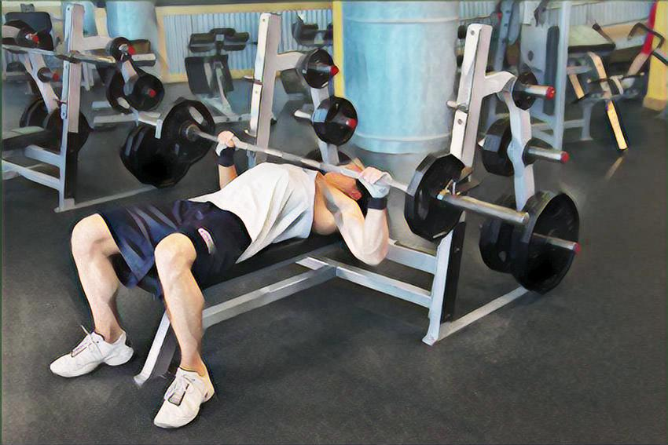

平板杠铃卧推（barbell press） 动作要领： 1.采用宽握距，使胸大肌获得充分伸展和彻底收缩；要求躯干和胸部向上挺起成桥形，两肩下沉，横杠放在胸上置乳头上1厘米处；当杠铃推起至两臂伸直时，必须使胸大肌处于“顶峰收缩”状态，稍停。 2. 上推时用鼻子呼气，还原时用口吸气。 注意事项： 1.不要把臀部和腰抬离凳子。 2.双脚的位置：两腿分开成45度角，平放在地上，可以有力支撑。如果把脚踩到板凳上，这样稳定性会比较差，需要分担一部分力量控制核心肌群的稳定，这样就不能发挥最大的力量锻炼胸肌。当然在史密斯机器上可以把脚放在凳子上就没有这一顾虑，而且能有效阻止腰腹协助发力，更孤立锻炼胸大肌。
